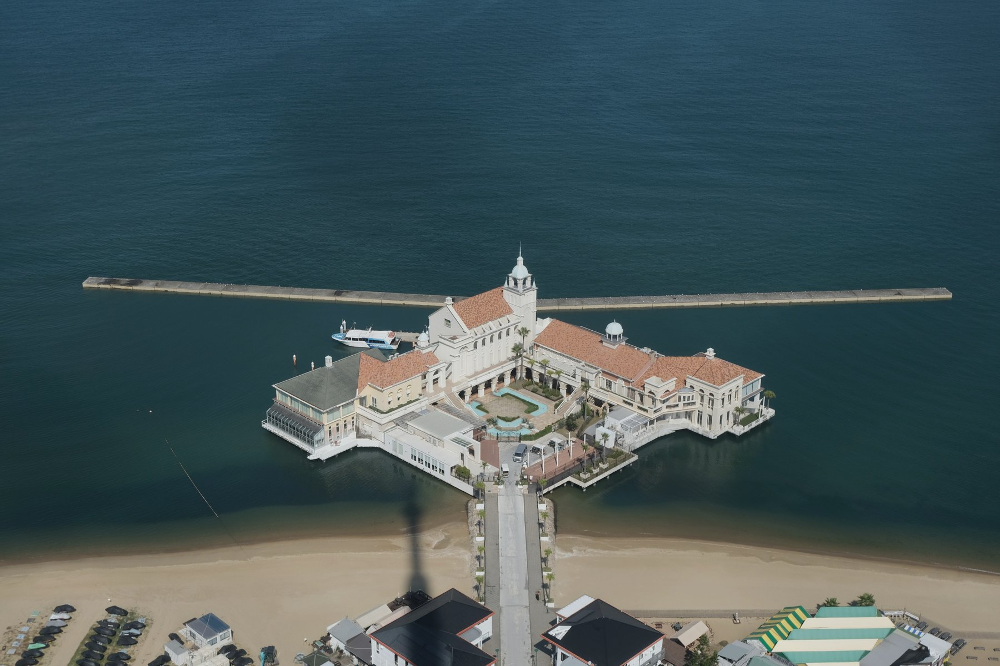
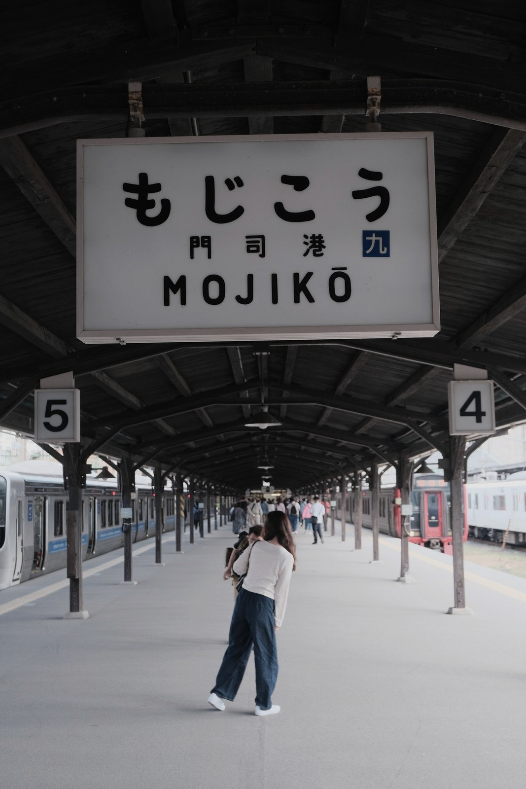
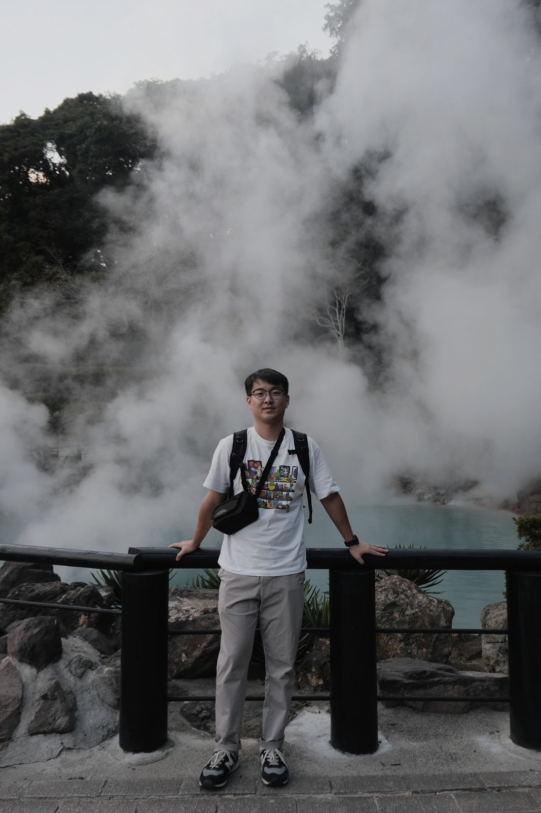
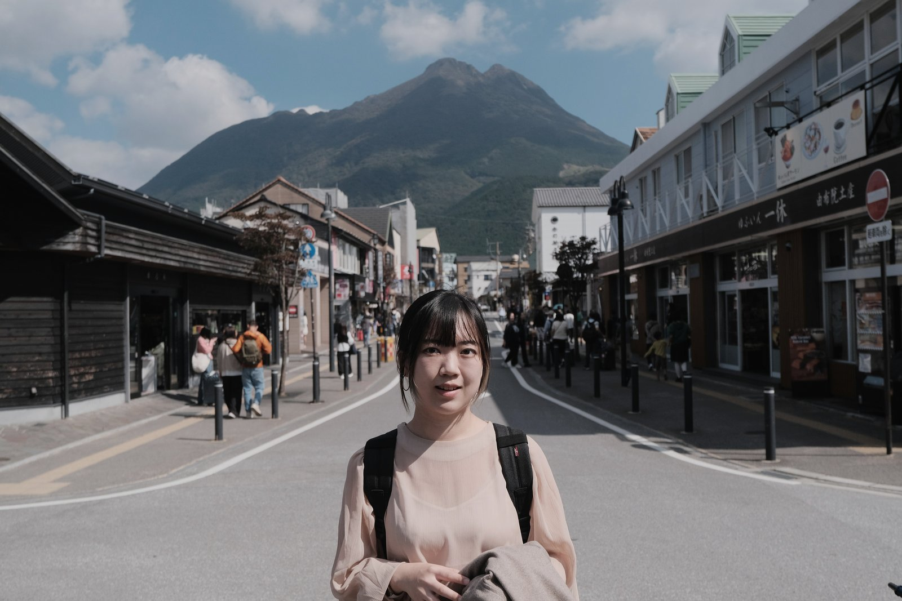
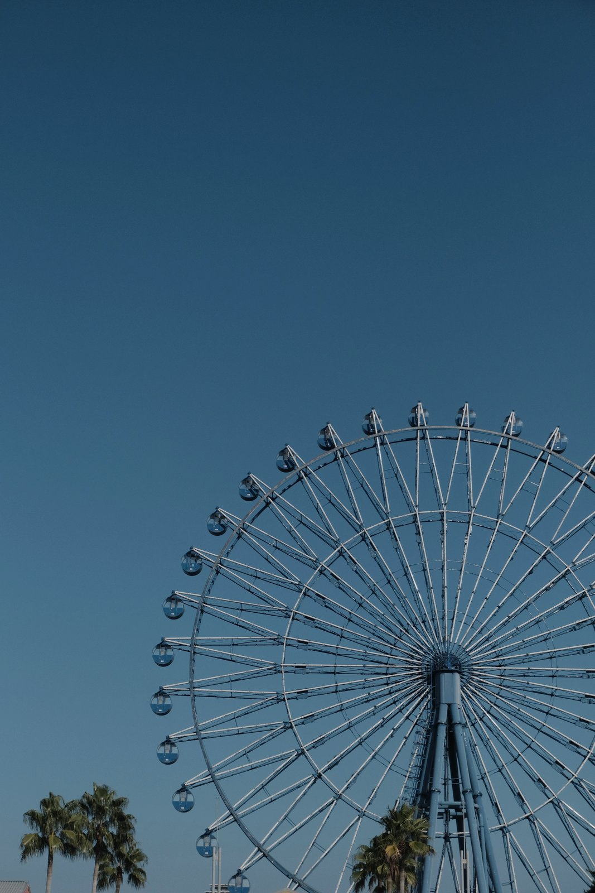
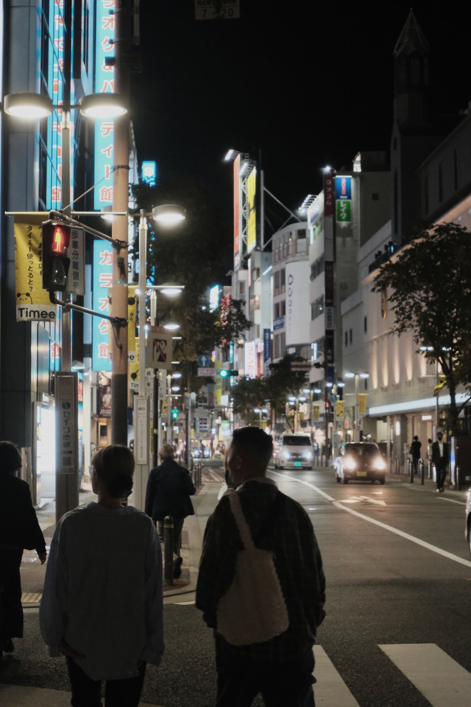

2023 Oct / Japan / #旅途 #日常
福岡六日遊
福岡是那種一開始沒有特別用力安排，結果回來後反而很常想起的城市。海邊很近，路也好走，很多時候只是搭車、散步、找東西吃，就覺得這幾天過得滿舒服。

港邊的風
我自己很喜歡福岡靠海的感覺，不是那種非得看什麼大景的海，而是很日常、很容易走到的海。那幾天常常覺得，能在城市裡很快接到海風，是一件滿幸福的事。
慢慢亮起來的城市
福岡的晚上也不會太吵。吃完飯走在路上，看招牌一個一個亮起來，會有一種「今天這樣就很好了」的感覺。




